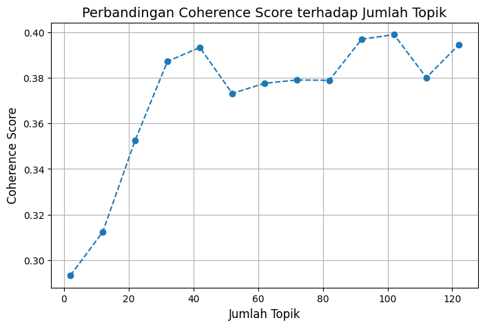
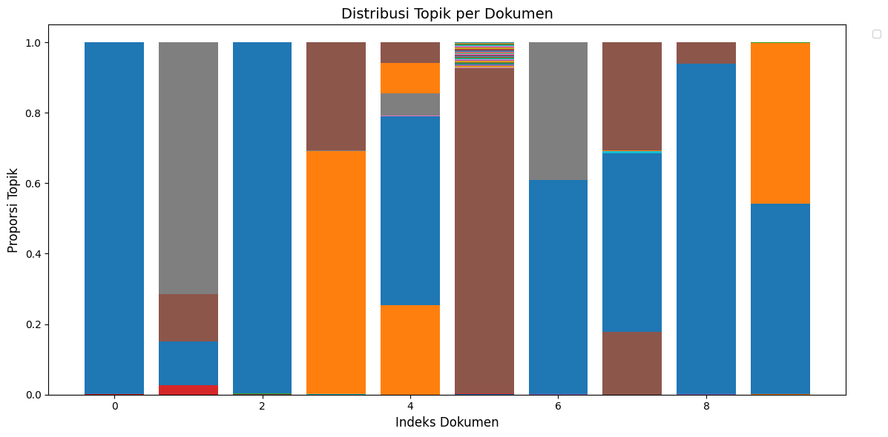
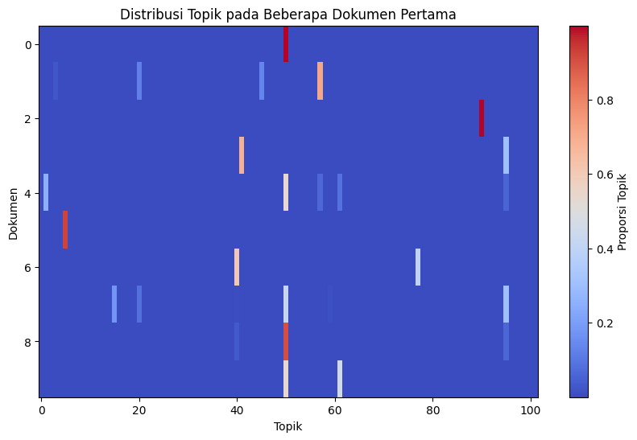
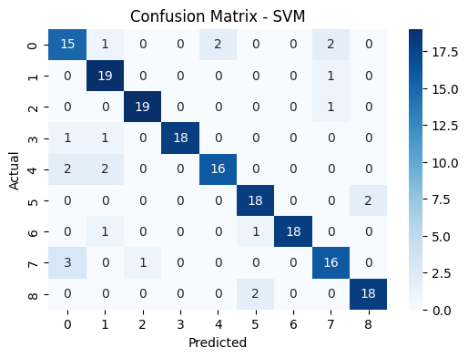
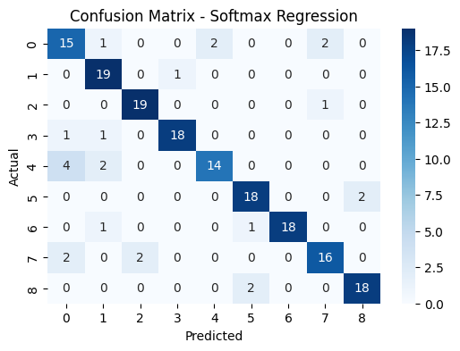

Melakukan Klasifikasi Dengan LDA#
!pip install plotly
Requirement already satisfied: plotly in /usr/local/lib/python3.12/dist-packages (5.24.1)
Requirement already satisfied: tenacity>=6.2.0 in /usr/local/lib/python3.12/dist-packages (from plotly) (8.5.0)
Requirement already satisfied: packaging in /usr/local/lib/python3.12/dist-packages (from plotly) (25.0)
!pip install -q nltk contractions emoji pyspellchecker Sastrawi
━━━━━━━━━━━━━━━━━━━━━━━━━━━━━━━━━━━━━━━━ 608.4/608.4 kB 10.9 MB/s eta 0:00:00
━━━━━━━━━━━━━━━━━━━━━━━━━━━━━━━━━━━━━━━━ 7.2/7.2 MB 55.6 MB/s eta 0:00:00
━━━━━━━━━━━━━━━━━━━━━━━━━━━━━━━━━━━━━━━━ 209.7/209.7 kB 11.6 MB/s eta 0:00:00
━━━━━━━━━━━━━━━━━━━━━━━━━━━━━━━━━━━━━━━━ 345.1/345.1 kB 16.6 MB/s eta 0:00:00
━━━━━━━━━━━━━━━━━━━━━━━━━━━━━━━━━━━━━━━━ 114.9/114.9 kB 6.0 MB/s eta 0:00:00
?25h
!pip install gensim
Collecting gensim
Downloading gensim-4.3.3-cp312-cp312-manylinux_2_17_x86_64.manylinux2014_x86_64.whl.metadata (8.1 kB)
Collecting numpy<2.0,>=1.18.5 (from gensim)
Downloading numpy-1.26.4-cp312-cp312-manylinux_2_17_x86_64.manylinux2014_x86_64.whl.metadata (61 kB)
━━━━━━━━━━━━━━━━━━━━━━━━━━━━━━━━━━━━━━━━ 61.0/61.0 kB 2.1 MB/s eta 0:00:00
?25hCollecting scipy<1.14.0,>=1.7.0 (from gensim)
Downloading scipy-1.13.1-cp312-cp312-manylinux_2_17_x86_64.manylinux2014_x86_64.whl.metadata (60 kB)
━━━━━━━━━━━━━━━━━━━━━━━━━━━━━━━━━━━━━━━━ 60.6/60.6 kB 2.1 MB/s eta 0:00:00
?25hRequirement already satisfied: smart-open>=1.8.1 in /usr/local/lib/python3.12/dist-packages (from gensim) (7.3.1)
Requirement already satisfied: wrapt in /usr/local/lib/python3.12/dist-packages (from smart-open>=1.8.1->gensim) (1.17.3)
Downloading gensim-4.3.3-cp312-cp312-manylinux_2_17_x86_64.manylinux2014_x86_64.whl (26.6 MB)
━━━━━━━━━━━━━━━━━━━━━━━━━━━━━━━━━━━━━━━━ 26.6/26.6 MB 38.5 MB/s eta 0:00:00
?25hDownloading numpy-1.26.4-cp312-cp312-manylinux_2_17_x86_64.manylinux2014_x86_64.whl (18.0 MB)
━━━━━━━━━━━━━━━━━━━━━━━━━━━━━━━━━━━━━━━━ 18.0/18.0 MB 26.4 MB/s eta 0:00:00
?25hDownloading scipy-1.13.1-cp312-cp312-manylinux_2_17_x86_64.manylinux2014_x86_64.whl (38.2 MB)
━━━━━━━━━━━━━━━━━━━━━━━━━━━━━━━━━━━━━━━━ 38.2/38.2 MB 9.8 MB/s eta 0:00:00
?25hInstalling collected packages: numpy, scipy, gensim
Attempting uninstall: numpy
Found existing installation: numpy 2.0.2
Uninstalling numpy-2.0.2:
Successfully uninstalled numpy-2.0.2
Attempting uninstall: scipy
Found existing installation: scipy 1.16.2
Uninstalling scipy-1.16.2:
Successfully uninstalled scipy-1.16.2
ERROR: pip's dependency resolver does not currently take into account all the packages that are installed. This behaviour is the source of the following dependency conflicts.
opencv-python 4.12.0.88 requires numpy<2.3.0,>=2; python_version >= "3.9", but you have numpy 1.26.4 which is incompatible.
thinc 8.3.6 requires numpy<3.0.0,>=2.0.0, but you have numpy 1.26.4 which is incompatible.
tsfresh 0.21.1 requires scipy>=1.14.0; python_version >= "3.10", but you have scipy 1.13.1 which is incompatible.
opencv-contrib-python 4.12.0.88 requires numpy<2.3.0,>=2; python_version >= "3.9", but you have numpy 1.26.4 which is incompatible.
opencv-python-headless 4.12.0.88 requires numpy<2.3.0,>=2; python_version >= "3.9", but you have numpy 1.26.4 which is incompatible.
Successfully installed gensim-4.3.3 numpy-1.26.4 scipy-1.13.1
import re
import sys
import time
import string
import warnings
from collections import Counter
import pandas as pd
import numpy as np
import nltk
from nltk.tokenize import word_tokenize
from nltk.corpus import stopwords
from nltk.stem import PorterStemmer, WordNetLemmatizer
from Sastrawi.Stemmer.StemmerFactory import StemmerFactory
from spellchecker import SpellChecker
import contractions
import emoji
from gensim.models import Word2Vec, FastText
from gensim import corpora, models
from gensim.models import LdaModel
from gensim.models.coherencemodel import CoherenceModel
from sklearn.decomposition import PCA
from sklearn.feature_extraction.text import TfidfVectorizer
import requests
from bs4 import BeautifulSoup
import matplotlib.pyplot as plt
import plotly.graph_objects as go
from tqdm import tqdm
warnings.filterwarnings('ignore')
nltk.download("punkt")
nltk.download("punkt_tab")
# Download stopwords
nltk.download('stopwords')
[nltk_data] Downloading package punkt to /root/nltk_data...
[nltk_data] Unzipping tokenizers/punkt.zip.
[nltk_data] Downloading package punkt_tab to /root/nltk_data...
[nltk_data] Unzipping tokenizers/punkt_tab.zip.
[nltk_data] Downloading package stopwords to /root/nltk_data...
[nltk_data] Unzipping corpora/stopwords.zip.
True
Crawling Berita#
def berita(categories, pages_per_category=1):
start_time = time.time() # mulai hitung waktu
BASE_URL = "https://www.tempo.co/indeks?page={}&category=rubrik&rubric_slug={}"
data = {
"id_berita": [],
"judul_berita": [],
"isi_berita": [],
"kategori_berita": []
}
for cat_id, cat in enumerate(categories, start=1):
for page in range(1, pages_per_category+1):
url = BASE_URL.format(page, cat)
r = requests.get(url, headers={"User-Agent": "Mozilla/5.0"})
soup = BeautifulSoup(r.text, "html.parser")
articles = soup.select("figure figcaption a")
for a in articles:
link = "https://www.tempo.co" + a["href"]
title = a.get_text(strip=True)
id_match = re.search(r"-(\d+)$", link)
berita_id = id_match.group(1) if id_match else None
try:
content = get_article_content(link)
except:
content = ""
data["id_berita"].append(berita_id)
data["judul_berita"].append(title)
data["isi_berita"].append(content)
data["kategori_berita"].append(cat)
print_progress2(cat, page, pages_per_category)
df = pd.DataFrame(data)
df.to_csv("tempo_berita.csv", index=False, encoding="utf-8-sig")
end_time = time.time()
elapsed = int(end_time - start_time)
jam, sisa = divmod(elapsed, 3600)
menit, detik = divmod(sisa, 60)
# summary
print("\n✅ Seluruh data berhasil dikumpulkan!")
print(f"📊 Total entri: {len(df)}")
print(f"⏱️ Waktu eksekusi: {jam} jam {menit} menit {detik} detik")
return None
berita = pd.read_csv("tempo_berita.csv")
berita
| id_berita | judul_berita | isi_berita | kategori_berita | |
|---|---|---|---|---|
| 0 | 2068663 | Kronologi Mundurnya Rahayu Saraswati dari DPR | RAHAYU SaraswatiDjojohadikusumo mengumumkan pe... | politik |
| 1 | 2068660 | Kata Wapres Gibran soal Reshuffle Kabinet | WAKIL PresidenGibran Rakabumingmeresponsreshuf... | politik |
| 2 | 2068655 | Kata Staf Khusus Gubernur Jakarta soal Tanggul... | TANGGUL beton yang disebut memiliki panjang 2 ... | politik |
| 3 | 2068650 | Empat Nama Mencuat dalam Bursa Calon Sekda Kab... | BURSA calon Sekretaris DaerahKabupaten Bekasi,... | politik |
| 4 | 2068644 | Top 3 Nasional: Klarifikasi Purbaya hingga Rah... | TIGA berita di kanal politik Tempo mendapat so... | politik |
| ... | ... | ... | ... | ... |
| 895 | 2066177 | Tangisan Antony Usai Pergi dari Manchester Uni... | PEMAIN sepak bola asal BrasilAntonymenangis sa... | sepakbola |
| 896 | 2066151 | Jadwal Siaran Langsung Timnas U-23 Indonesia d... | TIMNAS U-23 Indonesia akan memulai laga babakK... | sepakbola |
| 897 | 2066144 | Pesan Alexander Isak kepada Newcastle Usai Sag... | PEMAIN sepak bolaAlexander Isakberterima kasih... | sepakbola |
| 898 | 2066121 | Prediksi Indonesia vs Laos di Kualifikasi Pial... | DUEL Timnas U-23Indonesia vs Laosakan tersaji ... | sepakbola |
| 899 | 2066036 | Alasan Patrick Kluivert Puji Thom Haye dan Eli... | PELATIHTimnas IndonesiaPatrick Kluivert menila... | sepakbola |
900 rows × 4 columns
Fungsi cleaning dengan emoji#
def clean_text(text):
if not isinstance(text, str):
return ""
text = text.lower() # huruf kecil
text = emoji.demojize(text) # ubah emoji jadi teks, misal 😀 -> :grinning_face:
text = re.sub(r'\d+', '', text) # hapus angka
text = text.translate(str.maketrans('', '', string.punctuation)) # hapus tanda baca
text = re.sub(r'\W', ' ', text) # hapus karakter non-kata
text = BeautifulSoup(text, "html.parser").get_text() # hapus tag HTML
text = re.sub(r'\s+', ' ', text).strip() # normalisasi spasi
return text
# Baca CSV
tempo_df = pd.read_csv("tempo_berita.csv", dtype=str).fillna("")
# Terapkan langsung ke kolom target
tempo_df["isi_berita_clean"] = tempo_df["isi_berita"].apply(clean_text)
# Cleaning kolom target
tempo_df["isi_berita_clean"] = tempo_df["isi_berita"].apply(clean_text)
print("\nBerita (tempo_berita):")
tempo_df[["isi_berita", "isi_berita_clean"]].head(10)
Berita (tempo_berita):
| isi_berita | isi_berita_clean | |
|---|---|---|
| 0 | RAHAYU SaraswatiDjojohadikusumo mengumumkan pe... | rahayu saraswatidjojohadikusumo mengumumkan pe... |
| 1 | WAKIL PresidenGibran Rakabumingmeresponsreshuf... | wakil presidengibran rakabumingmeresponsreshuf... |
| 2 | TANGGUL beton yang disebut memiliki panjang 2 ... | tanggul beton yang disebut memiliki panjang hi... |
| 3 | BURSA calon Sekretaris DaerahKabupaten Bekasi,... | bursa calon sekretaris daerahkabupaten bekasi ... |
| 4 | TIGA berita di kanal politik Tempo mendapat so... | tiga berita di kanal politik tempo mendapat so... |
| 5 | Pilihan Editor:Pemerintah Bayari Iuran BPJS Ke... | pilihan editorpemerintah bayari iuran bpjs ket... |
| 6 | KOALISI Sipil mengusulkan sedikitnya lima isu ... | koalisi sipil mengusulkan sedikitnya lima isu ... |
| 7 | POLITIKUS Partai GerindraRahayu SaraswatiDjojo... | politikus partai gerindrarahayu saraswatidjojo... |
| 8 | POLITIKUS PartaiGerindraRahayu SaraswatiDjojoh... | politikus partaigerindrarahayu saraswatidjojoh... |
| 9 | MENTERI KeuanganPurbayaYudhi Sadewa menanggapi... | menteri keuanganpurbayayudhi sadewa menanggapi... |
# Tokenisasi untuk PTA
tempo_df["isi_berita_tokens"] = tempo_df["isi_berita_clean"].apply(word_tokenize)
print("\nBerita (isi_berita_tokens):")
tempo_df[["isi_berita_clean", "isi_berita_tokens"]].head(10)
Berita (isi_berita_tokens):
| isi_berita_clean | isi_berita_tokens | |
|---|---|---|
| 0 | rahayu saraswatidjojohadikusumo mengumumkan pe... | [rahayu, saraswatidjojohadikusumo, mengumumkan... |
| 1 | wakil presidengibran rakabumingmeresponsreshuf... | [wakil, presidengibran, rakabumingmeresponsres... |
| 2 | tanggul beton yang disebut memiliki panjang hi... | [tanggul, beton, yang, disebut, memiliki, panj... |
| 3 | bursa calon sekretaris daerahkabupaten bekasi ... | [bursa, calon, sekretaris, daerahkabupaten, be... |
| 4 | tiga berita di kanal politik tempo mendapat so... | [tiga, berita, di, kanal, politik, tempo, mend... |
| 5 | pilihan editorpemerintah bayari iuran bpjs ket... | [pilihan, editorpemerintah, bayari, iuran, bpj... |
| 6 | koalisi sipil mengusulkan sedikitnya lima isu ... | [koalisi, sipil, mengusulkan, sedikitnya, lima... |
| 7 | politikus partai gerindrarahayu saraswatidjojo... | [politikus, partai, gerindrarahayu, saraswatid... |
| 8 | politikus partaigerindrarahayu saraswatidjojoh... | [politikus, partaigerindrarahayu, saraswatidjo... |
| 9 | menteri keuanganpurbayayudhi sadewa menanggapi... | [menteri, keuanganpurbayayudhi, sadewa, menang... |
Stopwords#
# Stopwords untuk bahasa Indonesia
stop_words_id = set(stopwords.words('indonesian'))
# Filter stopwords di PTA
tempo_df["isi_berita_filtered"] = tempo_df["isi_berita_tokens"].apply(
lambda tokens: [word for word in tokens if word not in stop_words_id]
)
print("\nBerita (isi_berita_filtered):")
tempo_df[["isi_berita_tokens", "isi_berita_filtered"]].head(10)
Berita (isi_berita_filtered):
| isi_berita_tokens | isi_berita_filtered | |
|---|---|---|
| 0 | [rahayu, saraswatidjojohadikusumo, mengumumkan... | [rahayu, saraswatidjojohadikusumo, mengumumkan... |
| 1 | [wakil, presidengibran, rakabumingmeresponsres... | [wakil, presidengibran, rakabumingmeresponsres... |
| 2 | [tanggul, beton, yang, disebut, memiliki, panj... | [tanggul, beton, memiliki, kilometer, muncul, ... |
| 3 | [bursa, calon, sekretaris, daerahkabupaten, be... | [bursa, calon, sekretaris, daerahkabupaten, be... |
| 4 | [tiga, berita, di, kanal, politik, tempo, mend... | [berita, kanal, politik, tempo, sorotan, pemba... |
| 5 | [pilihan, editorpemerintah, bayari, iuran, bpj... | [pilihan, editorpemerintah, bayari, iuran, bpj... |
| 6 | [koalisi, sipil, mengusulkan, sedikitnya, lima... | [koalisi, sipil, mengusulkan, isu, dibahas, de... |
| 7 | [politikus, partai, gerindrarahayu, saraswatid... | [politikus, partai, gerindrarahayu, saraswatid... |
| 8 | [politikus, partaigerindrarahayu, saraswatidjo... | [politikus, partaigerindrarahayu, saraswatidjo... |
| 9 | [menteri, keuanganpurbayayudhi, sadewa, menang... | [menteri, keuanganpurbayayudhi, sadewa, menang... |
factory = StemmerFactory()
indo_stemmer = factory.create_stemmer()
tempo_df["isi_berita_stemmed"] = tempo_df["isi_berita_filtered"].apply(
lambda tokens: [indo_stemmer.stem(word) for word in tokens]
)
print("\nBerita - Stemming & Lemmatization (abstrak_id):")
tempo_df[["isi_berita_filtered", "isi_berita_stemmed"]].head(10)
Berita - Stemming & Lemmatization (abstrak_id):
| isi_berita_filtered | isi_berita_stemmed | |
|---|---|---|
| 0 | [rahayu, saraswatidjojohadikusumo, mengumumkan... | [rahayu, saraswatidjojohadikusumo, umum, undur... |
| 1 | [wakil, presidengibran, rakabumingmeresponsres... | [wakil, presidengibran, rakabumingmeresponsres... |
| 2 | [tanggul, beton, memiliki, kilometer, muncul, ... | [tanggul, beton, milik, kilometer, muncul, pes... |
| 3 | [bursa, calon, sekretaris, daerahkabupaten, be... | [bursa, calon, sekretaris, daerahkabupaten, be... |
| 4 | [berita, kanal, politik, tempo, sorotan, pemba... | [berita, kanal, politik, tempo, sorot, baca, s... |
| 5 | [pilihan, editorpemerintah, bayari, iuran, bpj... | [pilih, editorpemerintah, bayar, iur, bpjs, ke... |
| 6 | [koalisi, sipil, mengusulkan, isu, dibahas, de... | [koalisi, sipil, usul, isu, bahas, dewan, waki... |
| 7 | [politikus, partai, gerindrarahayu, saraswatid... | [politikus, partai, gerindrarahayu, saraswatid... |
| 8 | [politikus, partaigerindrarahayu, saraswatidjo... | [politikus, partaigerindrarahayu, saraswatidjo... |
| 9 | [menteri, keuanganpurbayayudhi, sadewa, menang... | [menteri, keuanganpurbayayudhi, sadewa, tangga... |
Fungsi expand kontraksi bahasa Indonesia#
def expand_indonesian_contractions(text):
contractions_dict = {
"gak": "tidak", "ga": "tidak", "nggak": "tidak", "enggak": "tidak", "ngga": "tidak", "gk": "tidak", "tdk": "tidak", "tk": "tidak",
"gue": "saya", "gw": "saya", "gua": "saya", "sy": "saya", "aq": "saya", "q": "saya", "ane": "saya",
"lu": "kamu", "loe": "kamu", "lo": "kamu", "km": "kamu", "kmu": "kamu", "elu": "kamu",
"dah": "sudah", "udah": "sudah", "sdh": "sudah", "udh": "sudah",
"blm": "belum", "td": "tadi", "ntar": "nanti", "skr": "sekarang", "skrg": "sekarang", "skg": "sekarang",
"kmrn": "kemarin", "kemrn": "kemarin", "kmarin": "kemarin",
"aja": "saja", "aj": "saja", "sj": "saja",
"nih": "ini", "nie": "ini", "ni": "ini", "tuh": "itu", "gtu": "begitu", "gitu": "begitu",
"trs": "terus", "trus": "terus",
"yg": "yang", "utk": "untuk", "dlm": "dalam", "dr": "dari", "dg": "dengan", "jd": "jadi", "jg": "juga",
"krn": "karena", "tp": "tetapi", "tpi": "tetapi", "sm": "sama", "thd": "terhadap",
"dll": "dan lain-lain", "dsb": "dan sebagainya", "dst": "dan seterusnya",
"banget": "sekali", "bgt": "sekali", "sgt": "sangat", "sngt": "sangat",
"lg": "sedang", "sdg": "sedang",
"dl": "dulu", "pls": "tolong", "tolongin": "tolong", "plis": "tolong",
"wkwk": "tertawa", "wkwkwk": "tertawa", "hehe": "tertawa kecil", "hihi": "tertawa kecil",
"btw": "ngomong-ngomong", "imo": "menurut saya", "imho": "menurut saya", "cmiiw": "koreksi jika saya salah",
"idk": "saya tidak tahu", "jk": "hanya bercanda",
"ok": "baik", "oke": "baik", "okey": "baik", "sip": "baik",
"ciyus": "serius", "serem": "menyeramkan",
"kl": "kalau", "klo": "kalau", "klu": "kalau",
"spy": "supaya", "spya": "supaya",
"bbrp": "beberapa", "tsb": "tersebut", "trsbt": "tersebut",
"dpt": "dapat", "bs": "bisa", "bsa": "bisa",
"stlh": "setelah", "sblm": "sebelum",
"mnj": "manajemen", "man": "manajemen", "mgt": "management",
"org": "organisasi", "org2": "organisasi", "orgzt": "organisasi",
"str": "struktur", "stkt": "struktur",
"ldr": "leader", "ldrshp": "leadership", "pimp": "pimpinan", "pemimp": "pemimpin",
"pln": "perencanaan", "renc": "perencanaan", "plan": "perencanaan",
"orgz": "organizing", "orgzn": "organisasi",
"dir": "directing", "pgn": "pengarahan",
"cnt": "control", "cont": "control", "ctrl": "kontrol", "pengend": "pengendalian",
"eff": "efisiensi", "effct": "efektivitas",
"sdm": "sumber daya manusia", "hr": "human resource", "hrd": "human resource development",
"res": "resource", "rsc": "resource", "sda": "sumber daya alam",
"inv": "investasi", "invt": "investasi",
"pmas": "pemasaran", "mkt": "marketing", "mktg": "marketing",
"prod": "produksi", "prdks": "produksi",
"fin": "finance", "keu": "keuangan", "akut": "akuntansi", "acct": "akuntansi",
"ris": "risiko", "rsko": "risiko",
"anal": "analisis", "eval": "evaluasi",
"strtg": "strategi", "stg": "strategi",
"ops": "operasi", "opr": "operasional", "oprs": "operasional",
"bsc": "balanced scorecard", "swot": "analisis swot", "pest": "analisis pest",
"csr": "corporate social responsibility", "gcn": "good corporate governance",
"qm": "quality management", "iso": "standar iso",
"kpi": "key performance indicator", "indik": "indikator",
"knowl": "knowledge management", "kmgt": "knowledge management",
"chg": "change management", "innv": "inovasi",
"cnfl": "konflik", "cnflt": "konflik",
"krj": "kerja", "tm": "tim", "tmwrk": "kerja sama tim",
"cst": "cost", "faktorfaktor": "faktor", "bya": "biaya",
"val": "nilai", "valu": "value",
"proj": "proyek", "prjk": "proyek",
"med": "medis", "obat2": "obat-obatan", "rs": "rumah sakit",
"dok": "dokter", "drg": "dokter gigi", "prof": "profesor",
"pt": "perguruan tinggi", "univ": "universitas", "fak": "fakultas",
"skripsi": "skripsi", "tesis": "tesis", "disertasi": "disertasi",
"mhs": "mahasiswa", "mhsw": "mahasiswa"
}
pattern = r'\b(' + '|'.join(re.escape(key) for key in contractions_dict.keys()) + r')\b'
def replace_match(match):
return contractions_dict[match.group(0).lower()]
expanded_text = re.sub(pattern, replace_match, text, flags=re.IGNORECASE)
return expanded_text
tempo_df["isi_berita_expanded"] = tempo_df["isi_berita_stemmed"].apply(
lambda tokens: expand_indonesian_contractions(" ".join(tokens)).split()
)
print("\nBerita - Isi berita (expanded):")
tempo_df[["isi_berita_stemmed", "isi_berita_expanded"]].head(10)
Berita - Isi berita (expanded):
| isi_berita_stemmed | isi_berita_expanded | |
|---|---|---|
| 0 | [rahayu, saraswatidjojohadikusumo, umum, undur... | [rahayu, saraswatidjojohadikusumo, umum, undur... |
| 1 | [wakil, presidengibran, rakabumingmeresponsres... | [wakil, presidengibran, rakabumingmeresponsres... |
| 2 | [tanggul, beton, milik, kilometer, muncul, pes... | [tanggul, beton, milik, kilometer, muncul, pes... |
| 3 | [bursa, calon, sekretaris, daerahkabupaten, be... | [bursa, calon, sekretaris, daerahkabupaten, be... |
| 4 | [berita, kanal, politik, tempo, sorot, baca, s... | [berita, kanal, politik, tempo, sorot, baca, s... |
| 5 | [pilih, editorpemerintah, bayar, iur, bpjs, ke... | [pilih, editorpemerintah, bayar, iur, bpjs, ke... |
| 6 | [koalisi, sipil, usul, isu, bahas, dewan, waki... | [koalisi, sipil, usul, isu, bahas, dewan, waki... |
| 7 | [politikus, partai, gerindrarahayu, saraswatid... | [politikus, partai, gerindrarahayu, saraswatid... |
| 8 | [politikus, partaigerindrarahayu, saraswatidjo... | [politikus, partaigerindrarahayu, saraswatidjo... |
| 9 | [menteri, keuanganpurbayayudhi, sadewa, tangga... | [menteri, keuanganpurbayayudhi, sadewa, tangga... |
# Inisialisasi SpellChecker kosong
spell = SpellChecker(language=None)
# Load kamus Indonesia dari file
with open("00-indonesian-wordlist.lst", "r", encoding="latin-1") as f:
indo_words = [line.strip() for line in f.readlines()]
spell.word_frequency.load_words(indo_words)
# Fungsi untuk koreksi kata
def correct_word(word):
corr = spell.correction(word)
return corr if corr is not None else word
# Terapkan spellcheck ke setiap baris dengan progress bar
corrected_texts = []
for tokens in tqdm(tempo_df["isi_berita_expanded"], desc="Spellchecking", unit="row"):
corrected = [correct_word(word) for word in tokens]
corrected_texts.append(corrected)
tempo_df["isi_berita_spellchecked"] = corrected_texts
Spellchecking: 100%|██████████| 900/900 [3:25:52<00:00, 13.73s/row]
print("\nBerita (Cek Ejaan):")
tempo_df[["isi_berita_expanded", "isi_berita_spellchecked"]].head(10)
Berita (Cek Ejaan):
| isi_berita_expanded | isi_berita_spellchecked | |
|---|---|---|
| 0 | [rahayu, saraswatidjojohadikusumo, umum, undur... | [rahayu, saraswatidjojohadikusumo, umum, undur... |
| 1 | [wakil, presidengibran, rakabumingmeresponsres... | [wakil, presidengibran, rakabumingmeresponsres... |
| 2 | [tanggul, beton, milik, kilometer, muncul, pes... | [tanggul, beton, milik, kilometer, muncul, pes... |
| 3 | [bursa, calon, sekretaris, daerahkabupaten, be... | [bursa, calon, sekretaris, daerahkabupaten, be... |
| 4 | [berita, kanal, politik, tempo, sorot, baca, s... | [berita, kanal, politik, tempo, sorot, baca, s... |
| 5 | [pilih, editorpemerintah, bayar, iur, bpjs, ke... | [pilih, editorpemerintah, bayar, iur, bps, ket... |
| 6 | [koalisi, sipil, usul, isu, bahas, dewan, waki... | [koalisi, sipil, usul, isu, bahas, dewan, waki... |
| 7 | [politikus, partai, gerindrarahayu, saraswatid... | [politikus, partai, gerindrarahayu, saraswatid... |
| 8 | [politikus, partaigerindrarahayu, saraswatidjo... | [politikus, partaigerindrarahayu, saraswatidjo... |
| 9 | [menteri, keuanganpurbayayudhi, sadewa, tangga... | [menteri, keuanganpurbayayudhi, sadewa, tangga... |
Pilih kolom yang ingin disimpan#
cols_to_save = [
"id_berita",
"judul_berita",
"isi_berita",
"kategori_berita",
"isi_berita_clean",
"isi_berita_tokens",
"isi_berita_filtered",
"isi_berita_stemmed",
"isi_berita_expanded",
"isi_berita_spellchecked"
]
# Simpan ke CSV
tempo_df[cols_to_save].to_csv("tempo_processed.csv", index=False, encoding="utf-8-sig")
print("File berhasil disimpan sebagai tempo_processed.csv")
File berhasil disimpan sebagai tempo_processed.csv
tempo_df_prs= pd.read_csv("tempo_processed.csv")
tempo_df_prs
| id_berita | judul_berita | isi_berita | kategori_berita | isi_berita_clean | isi_berita_tokens | isi_berita_filtered | isi_berita_stemmed | isi_berita_expanded | isi_berita_spellchecked | |
|---|---|---|---|---|---|---|---|---|---|---|
| 0 | 2068663 | Kronologi Mundurnya Rahayu Saraswati dari DPR | RAHAYU SaraswatiDjojohadikusumo mengumumkan pe... | politik | rahayu saraswatidjojohadikusumo mengumumkan pe... | ['rahayu', 'saraswatidjojohadikusumo', 'mengum... | ['rahayu', 'saraswatidjojohadikusumo', 'mengum... | ['rahayu', 'saraswatidjojohadikusumo', 'umum',... | ['rahayu', 'saraswatidjojohadikusumo', 'umum',... | ['rahayu', 'saraswatidjojohadikusumo', 'umum',... |
| 1 | 2068660 | Kata Wapres Gibran soal Reshuffle Kabinet | WAKIL PresidenGibran Rakabumingmeresponsreshuf... | politik | wakil presidengibran rakabumingmeresponsreshuf... | ['wakil', 'presidengibran', 'rakabumingmerespo... | ['wakil', 'presidengibran', 'rakabumingmerespo... | ['wakil', 'presidengibran', 'rakabumingmerespo... | ['wakil', 'presidengibran', 'rakabumingmerespo... | ['wakil', 'presidengibran', 'rakabumingmerespo... |
| 2 | 2068655 | Kata Staf Khusus Gubernur Jakarta soal Tanggul... | TANGGUL beton yang disebut memiliki panjang 2 ... | politik | tanggul beton yang disebut memiliki panjang hi... | ['tanggul', 'beton', 'yang', 'disebut', 'memil... | ['tanggul', 'beton', 'memiliki', 'kilometer', ... | ['tanggul', 'beton', 'milik', 'kilometer', 'mu... | ['tanggul', 'beton', 'milik', 'kilometer', 'mu... | ['tanggul', 'beton', 'milik', 'kilometer', 'mu... |
| 3 | 2068650 | Empat Nama Mencuat dalam Bursa Calon Sekda Kab... | BURSA calon Sekretaris DaerahKabupaten Bekasi,... | politik | bursa calon sekretaris daerahkabupaten bekasi ... | ['bursa', 'calon', 'sekretaris', 'daerahkabupa... | ['bursa', 'calon', 'sekretaris', 'daerahkabupa... | ['bursa', 'calon', 'sekretaris', 'daerahkabupa... | ['bursa', 'calon', 'sekretaris', 'daerahkabupa... | ['bursa', 'calon', 'sekretaris', 'daerahkabupa... |
| 4 | 2068644 | Top 3 Nasional: Klarifikasi Purbaya hingga Rah... | TIGA berita di kanal politik Tempo mendapat so... | politik | tiga berita di kanal politik tempo mendapat so... | ['tiga', 'berita', 'di', 'kanal', 'politik', '... | ['berita', 'kanal', 'politik', 'tempo', 'sorot... | ['berita', 'kanal', 'politik', 'tempo', 'sorot... | ['berita', 'kanal', 'politik', 'tempo', 'sorot... | ['berita', 'kanal', 'politik', 'tempo', 'sorot... |
| ... | ... | ... | ... | ... | ... | ... | ... | ... | ... | ... |
| 895 | 2066177 | Tangisan Antony Usai Pergi dari Manchester Uni... | PEMAIN sepak bola asal BrasilAntonymenangis sa... | sepakbola | pemain sepak bola asal brasilantonymenangis sa... | ['pemain', 'sepak', 'bola', 'asal', 'brasilant... | ['pemain', 'sepak', 'bola', 'brasilantonymenan... | ['main', 'sepak', 'bola', 'brasilantonymenangi... | ['main', 'sepak', 'bola', 'brasilantonymenangi... | ['main', 'sepak', 'bola', 'brasilantonymenangi... |
| 896 | 2066151 | Jadwal Siaran Langsung Timnas U-23 Indonesia d... | TIMNAS U-23 Indonesia akan memulai laga babakK... | sepakbola | timnas u indonesia akan memulai laga babakkual... | ['timnas', 'u', 'indonesia', 'akan', 'memulai'... | ['timnas', 'u', 'indonesia', 'laga', 'babakkua... | ['timnas', 'u', 'indonesia', 'laga', 'babakkua... | ['timnas', 'u', 'indonesia', 'laga', 'babakkua... | ['timnas', 'u', 'indonesia', 'laga', 'babakkua... |
| 897 | 2066144 | Pesan Alexander Isak kepada Newcastle Usai Sag... | PEMAIN sepak bolaAlexander Isakberterima kasih... | sepakbola | pemain sepak bolaalexander isakberterima kasih... | ['pemain', 'sepak', 'bolaalexander', 'isakbert... | ['pemain', 'sepak', 'bolaalexander', 'isakbert... | ['main', 'sepak', 'bolaalexander', 'isakberter... | ['main', 'sepak', 'bolaalexander', 'isakberter... | ['main', 'sepak', 'bolaalexander', 'isakberter... |
| 898 | 2066121 | Prediksi Indonesia vs Laos di Kualifikasi Pial... | DUEL Timnas U-23Indonesia vs Laosakan tersaji ... | sepakbola | duel timnas uindonesia vs laosakan tersaji pad... | ['duel', 'timnas', 'uindonesia', 'vs', 'laosak... | ['duel', 'timnas', 'uindonesia', 'vs', 'laosak... | ['duel', 'timnas', 'uindonesia', 'vs', 'laosak... | ['duel', 'timnas', 'uindonesia', 'vs', 'laosak... | ['duel', 'timnas', 'indonesia', 'as', 'asakan'... |
| 899 | 2066036 | Alasan Patrick Kluivert Puji Thom Haye dan Eli... | PELATIHTimnas IndonesiaPatrick Kluivert menila... | sepakbola | pelatihtimnas indonesiapatrick kluivert menila... | ['pelatihtimnas', 'indonesiapatrick', 'kluiver... | ['pelatihtimnas', 'indonesiapatrick', 'kluiver... | ['pelatihtimnas', 'indonesiapatrick', 'kluiver... | ['pelatihtimnas', 'indonesiapatrick', 'kluiver... | ['pelatihtimnas', 'indonesiapatrick', 'kluiver... |
900 rows × 10 columns
Hitung frekuensi kemunculan setiap kata#
from collections import Counter
import numpy as np
all_tokens = [word for tokens in tempo_df["isi_berita_spellchecked"] for word in tokens]
# Hitung frekuensi kemunculan setiap kata
word_freq = Counter(all_tokens)
# Ambil 20 kata yang paling sering muncul
common_words = word_freq.most_common(10)
print("=== 10 Kata Terbanyak ===")
for word, freq in common_words:
print(f"{word} : {freq}")
# Informasi tambahan
total_words = len(all_tokens) # jumlah total kata
unique_words = len(word_freq) # jumlah kata unik
avg_word_len = np.mean([len(word) for word in all_tokens]) # rata-rata panjang kata
avg_words_per_data = np.mean([len(tokens) for tokens in tempo_df["isi_berita_spellchecked"]]) # rata-rata kata per data
longest_word = max(all_tokens, key=len) # kata terpanjang
longest_word_len = len(longest_word)
print("\n=== Statistik Tambahan ===")
print(f"Jumlah total kata : {total_words}")
print(f"Jumlah kata unik : {unique_words}")
print(f"Rata-rata panjang kata : {avg_word_len:.2f} karakter")
print(f"Rata-rata kata per data : {avg_words_per_data:.2f} kata")
=== 10 Kata Terbanyak ===
indonesia : 1614
september : 1422
main : 1272
menteri : 1168
pilih : 1051
balap : 770
negara : 722
perintah : 706
jalan : 705
tim : 650
=== Statistik Tambahan ===
Jumlah total kata : 207341
Jumlah kata unik : 15625
Rata-rata panjang kata : 5.93 karakter
Rata-rata kata per data : 230.38 kata
Konversi hasil frekuensi kata ke DataFrame#
word_freq_df = pd.DataFrame(word_freq.items(), columns=["kata", "jumlah"])
# Urutkan berdasarkan jumlah kemunculan kata (dari terbesar ke terkecil)
word_freq_df = word_freq_df.sort_values(by="jumlah", ascending=False).reset_index(drop=True)
# Simpan hasil ke file CSV
word_freq_df.to_csv("tempo_word_frequency.csv", index=False, encoding="utf-8-sig")
print("\nFile berhasil disimpan sebagai tempo_word_frequency.csv.")
File berhasil disimpan sebagai tempo_word_frequency.csv.
TF-IDF#
tempo_df_wfq = pd.read_csv("tempo_word_frequency.csv")
print(tempo_df_wfq.head(10))
kata jumlah
0 indonesia 1614
1 september 1422
2 main 1272
3 menteri 1168
4 pilih 1051
5 balap 770
6 negara 722
7 perintah 706
8 jalan 705
9 tim 650
df = pd.read_csv('tempo_word_frequency.csv')
print(tempo_df.columns)
Index(['id_berita', 'judul_berita', 'isi_berita', 'kategori_berita',
'isi_berita_clean', 'isi_berita_tokens', 'isi_berita_filtered',
'isi_berita_stemmed', 'isi_berita_expanded', 'isi_berita_spellchecked'],
dtype='object')
Membuat TF-IDF Vectorizer#
vectorizer = TfidfVectorizer()
tfidf_matrix = vectorizer.fit_transform(tempo_df['isi_berita_clean'])
tfidf_df = pd.DataFrame(
tfidf_matrix.toarray(),
columns=vectorizer.get_feature_names_out()
)
print("\nTF-IDF shape:", tfidf_df.shape)
print(tfidf_df.head())
TF-IDF shape: (900, 23148)
aa aamiin aanwijzing aarhus aaron aas abaaba abad abadi abangku \
0 0.0 0.0 0.0 0.0 0.0 0.0 0.0 0.0 0.0 0.0
1 0.0 0.0 0.0 0.0 0.0 0.0 0.0 0.0 0.0 0.0
2 0.0 0.0 0.0 0.0 0.0 0.0 0.0 0.0 0.0 0.0
3 0.0 0.0 0.0 0.0 0.0 0.0 0.0 0.0 0.0 0.0
4 0.0 0.0 0.0 0.0 0.0 0.0 0.0 0.0 0.0 0.0
... zoom zubimendi zuihoden zulaikha zulfikar zulhas zulkarnaen \
0 ... 0.0 0.0 0.0 0.0 0.0 0.0 0.0
1 ... 0.0 0.0 0.0 0.0 0.0 0.0 0.0
2 ... 0.0 0.0 0.0 0.0 0.0 0.0 0.0
3 ... 0.0 0.0 0.0 0.0 0.0 0.0 0.0
4 ... 0.0 0.0 0.0 0.0 0.0 0.0 0.0
zulkifli zverev zwolle
0 0.0 0.0 0.0
1 0.0 0.0 0.0
2 0.0 0.0 0.0
3 0.0 0.0 0.0
4 0.0 0.0 0.0
[5 rows x 23148 columns]
Word Embedding#
corpus = []
for col in tempo_df['isi_berita_clean']:
word_list = col.split(" ")
corpus.append(word_list)
# Word2Vec dengan ukuran vektor 50
model = Word2Vec(corpus, min_count=1, vector_size=50, window=5, sg=0)
print("Kata mirip dengan 'presiden':")
print(model.wv.most_similar('presiden', topn=5))
print("\nKata mirip dengan 'data':")
print(model.wv.most_similar('data', topn=5))
# contoh cosmul
print("\nCosmul (presiden + sistem - data):")
print(model.wv.most_similar_cosmul(positive=['presiden', 'sistem'], negative=['data'], topn=5))
# doesnt_match: cari kata yang tidak sesuai konteks
print("\nKata yang tidak cocok dalam ['presiden', 'data', 'sistem', 'informasi']:")
print(model.wv.doesnt_match("presiden data sistem informasi".split()))
# save embeddings
filename = 'pta_embeddings.txt'
model.wv.save_word2vec_format(filename, binary=False)
print(f"\nEmbeddings disimpan ke {filename}")
Kata mirip dengan 'presiden':
[('subianto', 0.9938076138496399), ('prabowo', 0.9843542575836182), ('widodo', 0.9743742346763611), ('dilantik', 0.968199610710144), ('menjabat', 0.9569506645202637)]
Kata mirip dengan 'data':
[('janice', 0.998199999332428), ('hotel', 0.9979801177978516), ('sesar', 0.9972874522209167), ('perdagangan', 0.9968382120132446), ('maksimum', 0.996752142906189)]
Cosmul (presiden + sistem - data):
[('prerogatif', 1.0068981647491455), ('widodo', 0.9919576048851013), ('menpora', 0.9919025301933289), ('menjabat', 0.9903536438941956), ('prabowo', 0.9880002737045288)]
Kata yang tidak cocok dalam ['presiden', 'data', 'sistem', 'informasi']:
presiden
Embeddings disimpan ke pta_embeddings.txt
class MyTokenizer:
def fit_transform(self, texts):
return [str(text).lower().split() for text in texts]
class MeanEmbeddingVectorizer:
def __init__(self, word2vec_model):
self.word2vec = word2vec_model
self.dim = word2vec_model.wv.vector_size
def fit(self, X, y=None):
return self
def transform(self, X):
X_tokenized = MyTokenizer().fit_transform(X)
embeddings = []
for words in X_tokenized:
valid_vectors = [
self.word2vec.wv[word] for word in words
if word in self.word2vec.wv
]
if valid_vectors:
embeddings.append(np.mean(valid_vectors, axis=0))
else:
embeddings.append(np.zeros(self.dim))
return np.array(embeddings)
def fit_transform(self, X, y=None):
return self.transform(X)
tempo_df.shape
(900, 15)
tempo_df['tokens'] = tempo_df['isi_berita_clean'].apply(lambda x: str(x).split())
mean_embedding_vectorizer = MeanEmbeddingVectorizer(model)
mean_embedded = mean_embedding_vectorizer.fit_transform(tempo_df['tokens'])
tempo_df['array'] = list(mean_embedded)
tempo_df.head(10)
| id_berita | judul_berita | isi_berita | kategori_berita | isi_berita_clean | isi_berita_tokens | isi_berita_filtered | isi_berita_stemmed | isi_berita_expanded | isi_berita_spellchecked | isi_berita_vector | embedding | tokens | array | embedding_length | |
|---|---|---|---|---|---|---|---|---|---|---|---|---|---|---|---|
| 0 | 2068663 | Kronologi Mundurnya Rahayu Saraswati dari DPR | RAHAYU SaraswatiDjojohadikusumo mengumumkan pe... | politik | rahayu saraswatidjojohadikusumo mengumumkan pe... | [rahayu, saraswatidjojohadikusumo, mengumumkan... | [rahayu, saraswatidjojohadikusumo, mengumumkan... | [rahayu, saraswatidjojohadikusumo, umum, undur... | [rahayu, saraswatidjojohadikusumo, umum, undur... | [rahayu, saraswatidjojohadikusumo, umum, undur... | [-0.50332326, 0.15641461, 0.51342463, -0.75253... | [-0.09932058, 0.17000003, -0.061525397, 0.0258... | [rahayu, saraswatidjojohadikusumo, mengumumkan... | [0.0, 0.0, 0.0, 0.0, 0.0, 0.0, 0.0, 0.0, 0.0, ... | 100 |
| 1 | 2068660 | Kata Wapres Gibran soal Reshuffle Kabinet | WAKIL PresidenGibran Rakabumingmeresponsreshuf... | politik | wakil presidengibran rakabumingmeresponsreshuf... | [wakil, presidengibran, rakabumingmeresponsres... | [wakil, presidengibran, rakabumingmeresponsres... | [wakil, presidengibran, rakabumingmeresponsres... | [wakil, presidengibran, rakabumingmeresponsres... | [wakil, presidengibran, rakabumingmeresponsres... | [-0.3295427, 0.07140859, 0.4674911, -0.8695259... | [-0.20120716, 0.37025437, -0.1771595, 0.072695... | [wakil, presidengibran, rakabumingmeresponsres... | [0.0, 0.0, 0.0, 0.0, 0.0, 0.0, 0.0, 0.0, 0.0, ... | 100 |
| 2 | 2068655 | Kata Staf Khusus Gubernur Jakarta soal Tanggul... | TANGGUL beton yang disebut memiliki panjang 2 ... | politik | tanggul beton yang disebut memiliki panjang hi... | [tanggul, beton, yang, disebut, memiliki, panj... | [tanggul, beton, memiliki, kilometer, muncul, ... | [tanggul, beton, milik, kilometer, muncul, pes... | [tanggul, beton, milik, kilometer, muncul, pes... | [tanggul, beton, milik, kilometer, muncul, pes... | [-0.48500124, 0.22638653, 0.48222443, -0.63304... | [-0.082044974, 0.24683662, -0.06290082, 0.2461... | [tanggul, beton, yang, disebut, memiliki, panj... | [0.0, 0.0, 0.0, 0.0, 0.0, 0.0, 0.0, 0.0, 0.0, ... | 100 |
| 3 | 2068650 | Empat Nama Mencuat dalam Bursa Calon Sekda Kab... | BURSA calon Sekretaris DaerahKabupaten Bekasi,... | politik | bursa calon sekretaris daerahkabupaten bekasi ... | [bursa, calon, sekretaris, daerahkabupaten, be... | [bursa, calon, sekretaris, daerahkabupaten, be... | [bursa, calon, sekretaris, daerahkabupaten, be... | [bursa, calon, sekretaris, daerahkabupaten, be... | [bursa, calon, sekretaris, daerahkabupaten, be... | [-0.4603992, 0.22677262, 0.50541276, -0.634372... | [-0.20759386, 0.18033327, -0.002985986, 0.1178... | [bursa, calon, sekretaris, daerahkabupaten, be... | [0.0, 0.0, 0.0, 0.0, 0.0, 0.0, 0.0, 0.0, 0.0, ... | 100 |
| 4 | 2068644 | Top 3 Nasional: Klarifikasi Purbaya hingga Rah... | TIGA berita di kanal politik Tempo mendapat so... | politik | tiga berita di kanal politik tempo mendapat so... | [tiga, berita, di, kanal, politik, tempo, mend... | [berita, kanal, politik, tempo, sorotan, pemba... | [berita, kanal, politik, tempo, sorot, baca, s... | [berita, kanal, politik, tempo, sorot, baca, s... | [berita, kanal, politik, tempo, sorot, baca, s... | [-0.48636428, 0.12847008, 0.49350274, -0.80156... | [-0.17358515, 0.22207534, -0.18791035, 0.04559... | [tiga, berita, di, kanal, politik, tempo, mend... | [0.0, 0.0, 0.0, 0.0, 0.0, 0.0, 0.0, 0.0, 0.0, ... | 100 |
| 5 | 2068633 | Penjelasan Sekda soal Bedol Desa ASN Purwakart... | Pilihan Editor:Pemerintah Bayari Iuran BPJS Ke... | politik | pilihan editorpemerintah bayari iuran bpjs ket... | [pilihan, editorpemerintah, bayari, iuran, bpj... | [pilihan, editorpemerintah, bayari, iuran, bpj... | [pilih, editorpemerintah, bayar, iur, bpjs, ke... | [pilih, editorpemerintah, bayar, iur, bpjs, ke... | [pilih, editorpemerintah, bayar, iur, bps, ket... | [-0.4189788, 0.31073663, 0.54244035, -0.569871... | [-0.16609666, 0.20496497, 0.10258695, 0.118950... | [pilihan, editorpemerintah, bayari, iuran, bpj... | [0.0, 0.0, 0.0, 0.0, 0.0, 0.0, 0.0, 0.0, 0.0, ... | 100 |
| 6 | 2068623 | 5 Isu RUU Perampasan Aset yang Wajib Dibahas D... | KOALISI Sipil mengusulkan sedikitnya lima isu ... | politik | koalisi sipil mengusulkan sedikitnya lima isu ... | [koalisi, sipil, mengusulkan, sedikitnya, lima... | [koalisi, sipil, mengusulkan, isu, dibahas, de... | [koalisi, sipil, usul, isu, bahas, dewan, waki... | [koalisi, sipil, usul, isu, bahas, dewan, waki... | [koalisi, sipil, usul, isu, bahas, dewan, waki... | [-0.51125234, 0.1810495, 0.5009861, -0.6760334... | [-0.17898452, 0.289629, -0.034101587, 0.139296... | [koalisi, sipil, mengusulkan, sedikitnya, lima... | [0.0, 0.0, 0.0, 0.0, 0.0, 0.0, 0.0, 0.0, 0.0, ... | 100 |
| 7 | 2068581 | Profil Rahayu Saraswati, Keponakan Prabowo yan... | POLITIKUS Partai GerindraRahayu SaraswatiDjojo... | politik | politikus partai gerindrarahayu saraswatidjojo... | [politikus, partai, gerindrarahayu, saraswatid... | [politikus, partai, gerindrarahayu, saraswatid... | [politikus, partai, gerindrarahayu, saraswatid... | [politikus, partai, gerindrarahayu, saraswatid... | [politikus, partai, gerindrarahayu, saraswatid... | [-0.5567956, 0.2088149, 0.5203538, -0.7232442,... | [-0.21897033, 0.24069913, -0.1079402, 0.092039... | [politikus, partai, gerindrarahayu, saraswatid... | [0.0, 0.0, 0.0, 0.0, 0.0, 0.0, 0.0, 0.0, 0.0, ... | 100 |
| 8 | 2068579 | Pernyataan Rahayu Saraswati yang Jadi Alasanny... | POLITIKUS PartaiGerindraRahayu SaraswatiDjojoh... | politik | politikus partaigerindrarahayu saraswatidjojoh... | [politikus, partaigerindrarahayu, saraswatidjo... | [politikus, partaigerindrarahayu, saraswatidjo... | [politikus, partaigerindrarahayu, saraswatidjo... | [politikus, partaigerindrarahayu, saraswatidjo... | [politikus, partaigerindrarahayu, saraswatidjo... | [-0.50733083, 0.17204301, 0.51634526, -0.72710... | [-0.09819072, 0.1476158, -0.08441598, 0.024343... | [politikus, partaigerindrarahayu, saraswatidjo... | [0.0, 0.0, 0.0, 0.0, 0.0, 0.0, 0.0, 0.0, 0.0, ... | 100 |
| 9 | 2068569 | Purbaya Klarifikasi Unggahan Anaknya di Media ... | MENTERI KeuanganPurbayaYudhi Sadewa menanggapi... | politik | menteri keuanganpurbayayudhi sadewa menanggapi... | [menteri, keuanganpurbayayudhi, sadewa, menang... | [menteri, keuanganpurbayayudhi, sadewa, menang... | [menteri, keuanganpurbayayudhi, sadewa, tangga... | [menteri, keuanganpurbayayudhi, sadewa, tangga... | [menteri, keuanganpurbayayudhi, sadewa, tangga... | [-0.3950236, 0.09036692, 0.44333428, -0.772544... | [-0.11862872, 0.19253519, -0.21034734, 0.07080... | [menteri, keuanganpurbayayudhi, sadewa, menang... | [0.0, 0.0, 0.0, 0.0, 0.0, 0.0, 0.0, 0.0, 0.0, ... | 100 |
tempo_df['embedding_length'] = tempo_df['array'].str.len()
print(tempo_df['embedding_length'])
0 50
1 50
2 50
3 50
4 50
..
895 50
896 50
897 50
898 50
899 50
Name: embedding_length, Length: 900, dtype: int64
tempo_df.shape
(900, 15)
num_features = len(tempo_df['array'].iloc[0]) # asumsi semua list punya panjang sama
columns = [f'f{i+1}' for i in range(num_features)]
# Inisialisasi dictionary untuk menampung data per kolom
data_dict = {col: [] for col in columns}
# Looping setiap baris di kolom 'embedding'
for embedding_list in tempo_df['array']:
for i, value in enumerate(embedding_list):
data_dict[f'f{i+1}'].append(value)
# Buat DataFrame dari dictionary
embedding_df = pd.DataFrame(data_dict)
print(embedding_df)
f1 f2 f3 f4 f5 f6 f7 f8 f9 f10 ... f41 f42 f43 \
0 0.0 0.0 0.0 0.0 0.0 0.0 0.0 0.0 0.0 0.0 ... 0.0 0.0 0.0
1 0.0 0.0 0.0 0.0 0.0 0.0 0.0 0.0 0.0 0.0 ... 0.0 0.0 0.0
2 0.0 0.0 0.0 0.0 0.0 0.0 0.0 0.0 0.0 0.0 ... 0.0 0.0 0.0
3 0.0 0.0 0.0 0.0 0.0 0.0 0.0 0.0 0.0 0.0 ... 0.0 0.0 0.0
4 0.0 0.0 0.0 0.0 0.0 0.0 0.0 0.0 0.0 0.0 ... 0.0 0.0 0.0
.. ... ... ... ... ... ... ... ... ... ... ... ... ... ...
895 0.0 0.0 0.0 0.0 0.0 0.0 0.0 0.0 0.0 0.0 ... 0.0 0.0 0.0
896 0.0 0.0 0.0 0.0 0.0 0.0 0.0 0.0 0.0 0.0 ... 0.0 0.0 0.0
897 0.0 0.0 0.0 0.0 0.0 0.0 0.0 0.0 0.0 0.0 ... 0.0 0.0 0.0
898 0.0 0.0 0.0 0.0 0.0 0.0 0.0 0.0 0.0 0.0 ... 0.0 0.0 0.0
899 0.0 0.0 0.0 0.0 0.0 0.0 0.0 0.0 0.0 0.0 ... 0.0 0.0 0.0
f44 f45 f46 f47 f48 f49 f50
0 0.0 0.0 0.0 0.0 0.0 0.0 0.0
1 0.0 0.0 0.0 0.0 0.0 0.0 0.0
2 0.0 0.0 0.0 0.0 0.0 0.0 0.0
3 0.0 0.0 0.0 0.0 0.0 0.0 0.0
4 0.0 0.0 0.0 0.0 0.0 0.0 0.0
.. ... ... ... ... ... ... ...
895 0.0 0.0 0.0 0.0 0.0 0.0 0.0
896 0.0 0.0 0.0 0.0 0.0 0.0 0.0
897 0.0 0.0 0.0 0.0 0.0 0.0 0.0
898 0.0 0.0 0.0 0.0 0.0 0.0 0.0
899 0.0 0.0 0.0 0.0 0.0 0.0 0.0
[900 rows x 50 columns]
embedding_df
| f1 | f2 | f3 | f4 | f5 | f6 | f7 | f8 | f9 | f10 | ... | f91 | f92 | f93 | f94 | f95 | f96 | f97 | f98 | f99 | f100 | |
|---|---|---|---|---|---|---|---|---|---|---|---|---|---|---|---|---|---|---|---|---|---|
| 0 | 0.0 | 0.0 | 0.0 | 0.0 | 0.0 | 0.0 | 0.0 | 0.0 | 0.0 | 0.0 | ... | 0.0 | 0.0 | 0.0 | 0.0 | 0.0 | 0.0 | 0.0 | 0.0 | 0.0 | 0.0 |
| 1 | 0.0 | 0.0 | 0.0 | 0.0 | 0.0 | 0.0 | 0.0 | 0.0 | 0.0 | 0.0 | ... | 0.0 | 0.0 | 0.0 | 0.0 | 0.0 | 0.0 | 0.0 | 0.0 | 0.0 | 0.0 |
| 2 | 0.0 | 0.0 | 0.0 | 0.0 | 0.0 | 0.0 | 0.0 | 0.0 | 0.0 | 0.0 | ... | 0.0 | 0.0 | 0.0 | 0.0 | 0.0 | 0.0 | 0.0 | 0.0 | 0.0 | 0.0 |
| 3 | 0.0 | 0.0 | 0.0 | 0.0 | 0.0 | 0.0 | 0.0 | 0.0 | 0.0 | 0.0 | ... | 0.0 | 0.0 | 0.0 | 0.0 | 0.0 | 0.0 | 0.0 | 0.0 | 0.0 | 0.0 |
| 4 | 0.0 | 0.0 | 0.0 | 0.0 | 0.0 | 0.0 | 0.0 | 0.0 | 0.0 | 0.0 | ... | 0.0 | 0.0 | 0.0 | 0.0 | 0.0 | 0.0 | 0.0 | 0.0 | 0.0 | 0.0 |
| ... | ... | ... | ... | ... | ... | ... | ... | ... | ... | ... | ... | ... | ... | ... | ... | ... | ... | ... | ... | ... | ... |
| 895 | 0.0 | 0.0 | 0.0 | 0.0 | 0.0 | 0.0 | 0.0 | 0.0 | 0.0 | 0.0 | ... | 0.0 | 0.0 | 0.0 | 0.0 | 0.0 | 0.0 | 0.0 | 0.0 | 0.0 | 0.0 |
| 896 | 0.0 | 0.0 | 0.0 | 0.0 | 0.0 | 0.0 | 0.0 | 0.0 | 0.0 | 0.0 | ... | 0.0 | 0.0 | 0.0 | 0.0 | 0.0 | 0.0 | 0.0 | 0.0 | 0.0 | 0.0 |
| 897 | 0.0 | 0.0 | 0.0 | 0.0 | 0.0 | 0.0 | 0.0 | 0.0 | 0.0 | 0.0 | ... | 0.0 | 0.0 | 0.0 | 0.0 | 0.0 | 0.0 | 0.0 | 0.0 | 0.0 | 0.0 |
| 898 | 0.0 | 0.0 | 0.0 | 0.0 | 0.0 | 0.0 | 0.0 | 0.0 | 0.0 | 0.0 | ... | 0.0 | 0.0 | 0.0 | 0.0 | 0.0 | 0.0 | 0.0 | 0.0 | 0.0 | 0.0 |
| 899 | 0.0 | 0.0 | 0.0 | 0.0 | 0.0 | 0.0 | 0.0 | 0.0 | 0.0 | 0.0 | ... | 0.0 | 0.0 | 0.0 | 0.0 | 0.0 | 0.0 | 0.0 | 0.0 | 0.0 | 0.0 |
900 rows × 100 columns
Klasifikasi LDA#
if 'isi_berita_tokens' not in tempo_df.columns:
tempo_df['isi_berita_tokens'] = tempo_df['isi_berita_clean'].apply(lambda x: str(x).split())
# Dataset teks tokenized
texts = tempo_df['isi_berita_tokens']
# Buat dictionary dan corpus
dictionary = corpora.Dictionary(texts)
corpus = [dictionary.doc2bow(text) for text in texts]
# === Evaluasi jumlah topik optimal ===
coherence_values = []
model_list = []
topic_range = range(2, 130, 10) # misalnya 2–120 topik
for num_topics in topic_range:
model = LdaModel(
corpus=corpus,
num_topics=num_topics,
id2word=dictionary,
random_state=42,
passes=10,
iterations=100
)
model_list.append(model)
coherencemodel = CoherenceModel(model=model, texts=texts, dictionary=dictionary, coherence='c_v')
coherence_values.append(coherencemodel.get_coherence())
# === Visualisasi Coherence Score ===
plt.figure(figsize=(8, 5))
plt.plot(topic_range, coherence_values, marker='o', linestyle='--')
plt.xlabel("Jumlah Topik", fontsize=12)
plt.ylabel("Coherence Score", fontsize=12)
plt.title("Perbandingan Coherence Score terhadap Jumlah Topik", fontsize=14)
plt.grid(True)
plt.show()
# === Model terbaik ===
optimal_model = model_list[coherence_values.index(max(coherence_values))]
optimal_topics = topic_range[coherence_values.index(max(coherence_values))]
print("✅ Model terbaik memiliki", optimal_topics, "topik")
print("Coherence Score terbaik:", max(coherence_values))

✅ Model terbaik memiliki 102 topik
Coherence Score terbaik: 0.39892290915768486
for idx, topic in optimal_model.print_topics(-1):
print(f"\nTopik {idx+1}: {topic}")
Topik 1: 0.008*"asia" + 0.008*"depan" + 0.007*"lima" + 0.006*"gemilang" + 0.006*"dan" + 0.006*"menit" + 0.005*"di" + 0.005*"gol" + 0.005*"dengan" + 0.005*"dua"
Topik 2: 0.032*"tuntutan" + 0.020*"yang" + 0.019*"dan" + 0.015*"rakyat" + 0.013*"di" + 0.012*"pada" + 0.011*"kota" + 0.011*"ekonomi" + 0.011*"sebagian" + 0.010*"itu"
Topik 3: 0.021*"yang" + 0.018*"pekerja" + 0.016*"di" + 0.016*"tambang" + 0.011*"dan" + 0.010*"terjebak" + 0.010*"area" + 0.009*"dalam" + 0.009*"para" + 0.009*"itu"
Topik 4: 0.029*"gibran" + 0.016*"di" + 0.014*"kata" + 0.012*"dan" + 0.010*"adrian" + 0.010*"lobster" + 0.010*"batam" + 0.009*"indonesia" + 0.009*"lafc" + 0.009*"budidaya"
Topik 5: 0.027*"di" + 0.019*"yang" + 0.018*"angin" + 0.017*"monsun" + 0.016*"dan" + 0.014*"september" + 0.014*"jawa" + 0.013*"erma" + 0.012*"cuaca" + 0.011*"bagian"
Topik 6: 0.070*"agung" + 0.050*"ketua" + 0.044*"ma" + 0.043*"hakim" + 0.030*"suara" + 0.026*"wakil" + 0.026*"mahkamah" + 0.025*"pemilihan" + 0.021*"nonyudisial" + 0.016*"dwiarso"
Topik 7: 0.067*"haji" + 0.059*"kpk" + 0.042*"kuota" + 0.031*"ini" + 0.021*"khalid" + 0.021*"dari" + 0.018*"korupsi" + 0.018*"agama" + 0.017*"uang" + 0.015*"antirasuah"
Topik 8: 0.024*"kpk" + 0.022*"sosial" + 0.019*"dan" + 0.017*"asep" + 0.016*"dana" + 0.015*"ojk" + 0.015*"itu" + 0.014*"tersangka" + 0.014*"bi" + 0.014*"ini"
Topik 9: 0.021*"yang" + 0.015*"dan" + 0.014*"pasangan" + 0.014*"calon" + 0.012*"dengan" + 0.012*"pada" + 0.012*"wakil" + 0.011*"di" + 0.008*"tidak" + 0.008*"digoel"
Topik 10: 0.021*"fore" + 0.018*"dan" + 0.015*"serikat" + 0.014*"ini" + 0.013*"di" + 0.012*"dalam" + 0.011*"dengan" + 0.010*"yang" + 0.009*"pekerja" + 0.009*"donut"
Topik 11: 0.008*"bhaktapur" + 0.004*"viber" + 0.004*"rupee" + 0.004*"laporanpolitico" + 0.004*"vandalis" + 0.002*"pembakaran" + 0.001*"gen" + 0.001*"z" + 0.000*"dan" + 0.000*"di"
Topik 12: 0.023*"ganda" + 0.022*"vs" + 0.021*"babak" + 0.018*"wakil" + 0.016*"putra" + 0.015*"di" + 0.014*"alwi" + 0.014*"indonesia" + 0.012*"yang" + 0.012*"skor"
Topik 13: 0.030*"di" + 0.025*"saya" + 0.018*"ini" + 0.015*"dan" + 0.015*"yang" + 0.014*"akan" + 0.011*"lps" + 0.010*"tahun" + 0.010*"dewan" + 0.009*"untuk"
Topik 14: 0.025*"dan" + 0.022*"yang" + 0.021*"di" + 0.016*"dalam" + 0.010*"dari" + 0.009*"ini" + 0.009*"pada" + 0.009*"itu" + 0.008*"untuk" + 0.008*"tersebut"
Topik 15: 0.022*"klub" + 0.020*"jung" + 0.019*"memperkuat" + 0.019*"persib" + 0.017*"tahun" + 0.016*"pemain" + 0.015*"berusia" + 0.014*"bojan" + 0.012*"bandung" + 0.012*"fc"
Topik 16: 0.033*"dan" + 0.026*"yang" + 0.021*"di" + 0.011*"ini" + 0.011*"untuk" + 0.011*"dengan" + 0.010*"dari" + 0.010*"dalam" + 0.007*"itu" + 0.007*"pada"
Topik 17: 0.021*"masjid" + 0.020*"prosesi" + 0.019*"yang" + 0.017*"keraton" + 0.015*"sultan" + 0.015*"di" + 0.013*"dan" + 0.011*"gedhe" + 0.011*"akan" + 0.010*"yogyakarta"
Topik 18: 0.000*"di" + 0.000*"dan" + 0.000*"yang" + 0.000*"s" + 0.000*"hari" + 0.000*"dengan" + 0.000*"rohmat" + 0.000*"hingga" + 0.000*"tiket" + 0.000*"marquez"
Topik 19: 0.042*"di" + 0.021*"marquez" + 0.019*"posisi" + 0.018*"dan" + 0.016*"dari" + 0.016*"yang" + 0.016*"motogp" + 0.015*"pembalap" + 0.014*"balapan" + 0.012*"poin"
Topik 20: 0.045*"rp" + 0.026*"dan" + 0.020*"di" + 0.015*"juta" + 0.015*"yang" + 0.013*"persen" + 0.013*"guru" + 0.011*"hingga" + 0.010*"dengan" + 0.010*"pada"
Topik 21: 0.026*"di" + 0.020*"indonesia" + 0.019*"yang" + 0.015*"dan" + 0.011*"pada" + 0.009*"tim" + 0.009*"ini" + 0.008*"akan" + 0.008*"untuk" + 0.008*"september"
Topik 22: 0.000*"di" + 0.000*"dan" + 0.000*"yang" + 0.000*"ini" + 0.000*"dengan" + 0.000*"itu" + 0.000*"marapi" + 0.000*"dari" + 0.000*"gunung" + 0.000*"dalam"
Topik 23: 0.030*"di" + 0.026*"yang" + 0.025*"dan" + 0.012*"untuk" + 0.011*"tersebut" + 0.009*"pada" + 0.009*"israel" + 0.009*"dengan" + 0.009*"dari" + 0.008*"dalam"
Topik 24: 0.025*"piastri" + 0.022*"norris" + 0.018*"pembalap" + 0.017*"detik" + 0.016*"posisi" + 0.015*"yang" + 0.014*"leclerc" + 0.014*"mclaren" + 0.014*"balapan" + 0.014*"verstappen"
Topik 25: 0.028*"yang" + 0.019*"di" + 0.017*"dan" + 0.012*"tersebut" + 0.012*"dalam" + 0.012*"dengan" + 0.011*"putin" + 0.011*"dari" + 0.010*"xi" + 0.009*"pada"
Topik 26: 0.000*"yang" + 0.000*"dan" + 0.000*"di" + 0.000*"u" + 0.000*"indonesia" + 0.000*"untuk" + 0.000*"ini" + 0.000*"tidak" + 0.000*"tim" + 0.000*"piala"
Topik 27: 0.019*"di" + 0.017*"yang" + 0.015*"dengan" + 0.015*"pada" + 0.012*"dan" + 0.012*"menit" + 0.012*"dari" + 0.010*"gol" + 0.010*"skor" + 0.009*"italia"
Topik 28: 0.019*"di" + 0.018*"yang" + 0.015*"dia" + 0.011*"itu" + 0.010*"dan" + 0.010*"ini" + 0.008*"kata" + 0.008*"seperti" + 0.008*"layanan" + 0.007*"atau"
Topik 29: 0.019*"farma" + 0.017*"dan" + 0.013*"ini" + 0.011*"pada" + 0.011*"kimia" + 0.011*"keuangan" + 0.010*"bidang" + 0.010*"direktur" + 0.010*"agung" + 0.009*"di"
Topik 30: 0.026*"di" + 0.020*"dan" + 0.019*"yang" + 0.011*"pada" + 0.011*"ini" + 0.011*"dari" + 0.010*"dengan" + 0.008*"dalam" + 0.008*"untuk" + 0.006*"indonesia"
Topik 31: 0.035*"kabupaten" + 0.024*"wilayah" + 0.020*"bpbd" + 0.016*"bnpb" + 0.016*"bencana" + 0.016*"nagekeo" + 0.015*"di" + 0.015*"kecamatan" + 0.014*"darurat" + 0.013*"provinsi"
Topik 32: 0.034*"di" + 0.022*"saya" + 0.022*"yang" + 0.017*"dan" + 0.014*"itu" + 0.014*"open" + 0.014*"dengan" + 0.013*"ia" + 0.012*"pada" + 0.011*"dalam"
Topik 33: 0.001*"di" + 0.001*"yang" + 0.001*"dan" + 0.000*"dengan" + 0.000*"ini" + 0.000*"dalam" + 0.000*"untuk" + 0.000*"pada" + 0.000*"dari" + 0.000*"akan"
Topik 34: 0.029*"tni" + 0.020*"siber" + 0.016*"usman" + 0.013*"pertahanan" + 0.009*"ancaman" + 0.007*"uu" + 0.005*"bukan" + 0.005*"penanggulangan" + 0.005*"membantu" + 0.005*"brigjen"
Topik 35: 0.026*"nabi" + 0.024*"maulid" + 0.023*"pekan" + 0.023*"libur" + 0.019*"di" + 0.017*"madiun" + 0.017*"panjang" + 0.016*"penumpang" + 0.015*"daop" + 0.014*"saw"
Topik 36: 0.004*"editorbali" + 0.004*"parah" + 0.000*"bekasi" + 0.000*"jakarta" + 0.000*"dan" + 0.000*"kota" + 0.000*"wilayah" + 0.000*"kabupaten" + 0.000*"sebagian" + 0.000*"yang"
Topik 37: 0.026*"kopi" + 0.022*"yang" + 0.015*"kami" + 0.013*"di" + 0.009*"untuk" + 0.009*"dia" + 0.009*"tidak" + 0.008*"ada" + 0.008*"itu" + 0.008*"dari"
Topik 38: 0.020*"yang" + 0.019*"untuk" + 0.015*"dan" + 0.013*"dalam" + 0.011*"koperasi" + 0.011*"di" + 0.010*"rp" + 0.010*"ini" + 0.010*"pada" + 0.008*"dengan"
Topik 39: 0.023*"yang" + 0.018*"dan" + 0.015*"di" + 0.013*"feri" + 0.012*"dari" + 0.011*"ini" + 0.010*"dalam" + 0.010*"dengan" + 0.009*"julius" + 0.008*"itu"
Topik 40: 0.026*"putri" + 0.023*"dunia" + 0.022*"di" + 0.017*"dengan" + 0.016*"kejuaraan" + 0.016*"setelah" + 0.015*"game" + 0.015*"yang" + 0.014*"tunggal" + 0.014*"indonesia"
Topik 41: 0.021*"yang" + 0.015*"tni" + 0.013*"dan" + 0.013*"hukum" + 0.012*"di" + 0.012*"pidana" + 0.010*"siber" + 0.010*"tidak" + 0.010*"dengan" + 0.010*"tindak"
Topik 42: 0.021*"dan" + 0.018*"haji" + 0.017*"yang" + 0.014*"ini" + 0.013*"daerah" + 0.012*"di" + 0.009*"kuota" + 0.009*"dengan" + 0.008*"baru" + 0.008*"dari"
Topik 43: 0.022*"indonesia" + 0.018*"yang" + 0.017*"swiss" + 0.012*"di" + 0.012*"untuk" + 0.011*"kami" + 0.010*"swajaya" + 0.010*"ngurah" + 0.010*"kbri" + 0.009*"tidak"
Topik 44: 0.025*"u" + 0.024*"indonesia" + 0.020*"di" + 0.018*"korea" + 0.016*"pada" + 0.015*"selatan" + 0.015*"yang" + 0.015*"gol" + 0.015*"ke" + 0.014*"laos"
Topik 45: 0.017*"anggaran" + 0.015*"yang" + 0.015*"kabupaten" + 0.015*"triliun" + 0.013*"rp" + 0.011*"almas" + 0.010*"dadan" + 0.009*"untuk" + 0.007*"pagu" + 0.006*"tersebut"
Topik 46: 0.038*"menteri" + 0.027*"dan" + 0.021*"prabowo" + 0.014*"presiden" + 0.012*"yang" + 0.010*"juli" + 0.010*"di" + 0.010*"sebagai" + 0.010*"september" + 0.008*"karding"
Topik 47: 0.027*"di" + 0.016*"pada" + 0.015*"mugello" + 0.014*"ia" + 0.014*"veda" + 0.012*"dengan" + 0.011*"sesi" + 0.010*"ke" + 0.009*"rookies" + 0.009*"yang"
Topik 48: 0.028*"lahan" + 0.022*"hektare" + 0.021*"kebakaran" + 0.018*"karhutla" + 0.014*"pada" + 0.013*"hutan" + 0.012*"terbakar" + 0.012*"di" + 0.010*"yang" + 0.008*"area"
Topik 49: 0.000*"di" + 0.000*"marquez" + 0.000*"ia" + 0.000*"yang" + 0.000*"dari" + 0.000*"dan" + 0.000*"poin" + 0.000*"posisi" + 0.000*"kualifikasi" + 0.000*"ini"
Topik 50: 0.023*"gerhana" + 0.019*"bulan" + 0.018*"dan" + 0.015*"pada" + 0.015*"wib" + 0.015*"geopark" + 0.014*"di" + 0.013*"september" + 0.011*"korban" + 0.011*"pukul"
Topik 51: 0.022*"di" + 0.020*"purbaya" + 0.019*"yang" + 0.017*"itu" + 0.015*"dia" + 0.013*"dan" + 0.012*"dpr" + 0.012*"keuangan" + 0.011*"menteri" + 0.010*"dengan"
Topik 52: 0.016*"yang" + 0.016*"di" + 0.015*"dan" + 0.015*"bbm" + 0.014*"ini" + 0.011*"itu" + 0.010*"swasta" + 0.010*"impor" + 0.009*"untuk" + 0.008*"pertamina"
Topik 53: 0.067*"hujan" + 0.046*"kabupaten" + 0.039*"dan" + 0.036*"barat" + 0.034*"bmkg" + 0.031*"wilayah" + 0.027*"hingga" + 0.024*"jawa" + 0.023*"di" + 0.022*"potensi"
Topik 54: 0.031*"gunung" + 0.024*"gempa" + 0.020*"di" + 0.019*"dan" + 0.016*"dari" + 0.015*"pada" + 0.014*"yang" + 0.013*"itu" + 0.012*"kali" + 0.012*"erupsi"
Topik 55: 0.013*"di" + 0.012*"spbu" + 0.011*"bbl" + 0.011*"yang" + 0.011*"dengan" + 0.010*"swasta" + 0.010*"akan" + 0.010*"penyelundupan" + 0.010*"pertamina" + 0.010*"lobster"
Topik 56: 0.023*"dan" + 0.019*"di" + 0.013*"gibran" + 0.011*"yang" + 0.010*"subhan" + 0.010*"itu" + 0.008*"ini" + 0.008*"indonesia" + 0.008*"september" + 0.007*"pada"
Topik 57: 0.027*"yang" + 0.023*"dan" + 0.021*"di" + 0.016*"pada" + 0.016*"dengan" + 0.014*"ini" + 0.013*"dari" + 0.008*"itu" + 0.007*"untuk" + 0.006*"dalam"
Topik 58: 0.033*"menteri" + 0.031*"yang" + 0.020*"dan" + 0.013*"ia" + 0.013*"untuk" + 0.012*"di" + 0.010*"partai" + 0.010*"sebagai" + 0.010*"dalam" + 0.009*"pada"
Topik 59: 0.026*"di" + 0.026*"piala" + 0.026*"dunia" + 0.024*"gol" + 0.023*"dengan" + 0.020*"dan" + 0.017*"ke" + 0.016*"dari" + 0.015*"tim" + 0.015*"kemenangan"
Topik 60: 0.024*"adrian" + 0.023*"di" + 0.019*"ini" + 0.018*"yang" + 0.014*"agung" + 0.013*"dan" + 0.013*"hakim" + 0.011*"as" + 0.011*"pada" + 0.011*"indonesia"
Topik 61: 0.024*"di" + 0.019*"yang" + 0.018*"yogyakarta" + 0.016*"itu" + 0.014*"dan" + 0.009*"hingga" + 0.009*"aksi" + 0.009*"warga" + 0.008*"ini" + 0.008*"dengan"
Topik 62: 0.027*"orang" + 0.024*"tersangka" + 0.022*"di" + 0.020*"yang" + 0.020*"metro" + 0.018*"anak" + 0.018*"jaya" + 0.018*"dan" + 0.016*"polda" + 0.015*"ditahan"
Topik 63: 0.022*"yang" + 0.017*"di" + 0.013*"dan" + 0.012*"lisa" + 0.010*"pada" + 0.010*"batam" + 0.009*"ridwan" + 0.009*"dengan" + 0.008*"ini" + 0.008*"dari"
Topik 64: 0.022*"yang" + 0.020*"di" + 0.019*"dan" + 0.016*"untuk" + 0.013*"dengan" + 0.009*"dari" + 0.009*"pada" + 0.008*"ini" + 0.008*"dalam" + 0.008*"itu"
Topik 65: 0.018*"yang" + 0.014*"indonesia" + 0.013*"dan" + 0.012*"pemain" + 0.012*"mampu" + 0.011*"laga" + 0.011*"brasil" + 0.010*"di" + 0.009*"kali" + 0.009*"pada"
Topik 66: 0.059*"bandara" + 0.035*"indonesia" + 0.032*"aplikasi" + 0.031*"penumpang" + 0.028*"all" + 0.019*"reza" + 0.016*"injourney" + 0.016*"internasional" + 0.012*"soekarnohatta" + 0.012*"airports"
Topik 67: 0.026*"di" + 0.020*"yang" + 0.019*"dan" + 0.018*"pada" + 0.018*"akan" + 0.012*"ini" + 0.010*"pertandingan" + 0.010*"piala" + 0.010*"pukul" + 0.009*"laga"
Topik 68: 0.029*"yang" + 0.021*"dan" + 0.019*"ban" + 0.012*"di" + 0.011*"agung" + 0.011*"dengan" + 0.010*"mahkamah" + 0.010*"itu" + 0.009*"hakim" + 0.009*"untuk"
Topik 69: 0.025*"di" + 0.022*"yang" + 0.021*"dan" + 0.016*"pemain" + 0.015*"pada" + 0.013*"indonesia" + 0.012*"untuk" + 0.012*"saya" + 0.012*"dengan" + 0.010*"dia"
Topik 70: 0.009*"di" + 0.007*"pengadaan" + 0.006*"korupsi" + 0.004*"setelah" + 0.004*"peran" + 0.004*"tuduhan" + 0.004*"agungnadiem" + 0.004*"komputasi" + 0.004*"komisi" + 0.004*"menyelidik"
Topik 71: 0.036*"di" + 0.026*"dan" + 0.020*"yang" + 0.020*"ini" + 0.017*"jakarta" + 0.017*"kota" + 0.014*"selatan" + 0.011*"wib" + 0.011*"pukul" + 0.010*"akan"
Topik 72: 0.031*"yang" + 0.016*"di" + 0.014*"dan" + 0.010*"tersebut" + 0.010*"pasal" + 0.010*"hukum" + 0.010*"untuk" + 0.010*"dalam" + 0.009*"mereka" + 0.009*"delpedro"
Topik 73: 0.033*"halal" + 0.030*"mbg" + 0.027*"s" + 0.025*"program" + 0.024*"gizi" + 0.017*"badan" + 0.015*"ini" + 0.013*"jaminan" + 0.012*"produk" + 0.012*"dan"
Topik 74: 0.033*"dan" + 0.028*"tahun" + 0.026*"pidana" + 0.022*"uang" + 0.021*"rp" + 0.020*"bambang" + 0.016*"penjara" + 0.016*"pasal" + 0.012*"denda" + 0.011*"dalam"
Topik 75: 0.019*"dinas" + 0.019*"anggaran" + 0.018*"urut" + 0.018*"perjalanan" + 0.017*"nomor" + 0.016*"untuk" + 0.014*"paslon" + 0.012*"proyek" + 0.012*"persen" + 0.011*"papua"
Topik 76: 0.030*"museum" + 0.023*"ini" + 0.023*"pengunjung" + 0.022*"di" + 0.020*"dan" + 0.017*"kota" + 0.015*"kuil" + 0.015*"sendai" + 0.013*"yang" + 0.013*"date"
Topik 77: 0.022*"yang" + 0.015*"persen" + 0.014*"dan" + 0.012*"pada" + 0.011*"di" + 0.011*"mesin" + 0.011*"ke" + 0.010*"ini" + 0.010*"dari" + 0.009*"indeks"
Topik 78: 0.028*"yang" + 0.026*"ruu" + 0.018*"aset" + 0.017*"ini" + 0.017*"perampasan" + 0.014*"untuk" + 0.014*"dan" + 0.014*"dalam" + 0.012*"dia" + 0.010*"di"
Topik 79: 0.037*"olahraga" + 0.018*"dan" + 0.018*"dito" + 0.017*"pemuda" + 0.015*"yang" + 0.011*"hetifah" + 0.011*"di" + 0.011*"rakyat" + 0.008*"september" + 0.008*"berharap"
Topik 80: 0.029*"rantis" + 0.022*"brimob" + 0.022*"affan" + 0.021*"di" + 0.020*"massa" + 0.014*"rohmat" + 0.013*"dengan" + 0.012*"saat" + 0.011*"polri" + 0.011*"tidak"
Topik 81: 0.030*"di" + 0.019*"dan" + 0.019*"yang" + 0.016*"untuk" + 0.011*"indonesia" + 0.010*"dengan" + 0.008*"ini" + 0.007*"pada" + 0.007*"beras" + 0.007*"menjadi"
Topik 82: 0.013*"pada" + 0.013*"indonesia" + 0.012*"dan" + 0.010*"dari" + 0.010*"ke" + 0.008*"energi" + 0.008*"di" + 0.008*"nuklir" + 0.008*"akan" + 0.007*"huang"
Topik 83: 0.023*"karbon" + 0.013*"indikasi" + 0.010*"herman" + 0.010*"diaz" + 0.010*"paviliun" + 0.009*"ihwal" + 0.007*"meet" + 0.007*"sesisellers" + 0.007*"sebaiknya" + 0.006*"emisi"
Topik 84: 0.023*"yang" + 0.020*"set" + 0.018*"pada" + 0.017*"voli" + 0.016*"bola" + 0.015*"dan" + 0.015*"di" + 0.014*"prancis" + 0.013*"indonesia" + 0.010*"putra"
Topik 85: 0.019*"di" + 0.018*"yang" + 0.018*"dan" + 0.016*"itu" + 0.010*"tersebut" + 0.010*"dalam" + 0.009*"pada" + 0.009*"dengan" + 0.008*"rp" + 0.008*"ke"
Topik 86: 0.017*"kiandra" + 0.013*"eisha" + 0.013*"saya" + 0.012*"pertumbuhan" + 0.012*"yang" + 0.009*"upah" + 0.009*"sektor" + 0.007*"pada" + 0.007*"kontribusi" + 0.007*"persen"
Topik 87: 0.020*"yang" + 0.018*"dan" + 0.014*"di" + 0.011*"pasar" + 0.011*"ekonomi" + 0.010*"ini" + 0.010*"fiskal" + 0.009*"kebijakan" + 0.008*"untuk" + 0.008*"bisa"
Topik 88: 0.020*"pangan" + 0.019*"dan" + 0.017*"yang" + 0.015*"untuk" + 0.015*"di" + 0.013*"indonesia" + 0.011*"pada" + 0.010*"akuatik" + 0.010*"dari" + 0.009*"hari"
Topik 89: 0.039*"di" + 0.025*"dan" + 0.018*"yang" + 0.014*"dari" + 0.013*"selatan" + 0.013*"barat" + 0.011*"samudra" + 0.011*"laut" + 0.011*"angin" + 0.009*"hindia"
Topik 90: 0.000*"menteri" + 0.000*"di" + 0.000*"dan" + 0.000*"indonesia" + 0.000*"yang" + 0.000*"pada" + 0.000*"sebagai" + 0.000*"menit" + 0.000*"makau" + 0.000*"itu"
Topik 91: 0.022*"yang" + 0.019*"itu" + 0.013*"dan" + 0.012*"di" + 0.010*"dalam" + 0.010*"tanggul" + 0.009*"dari" + 0.009*"ini" + 0.007*"mengatakan" + 0.007*"ke"
Topik 92: 0.032*"balapan" + 0.032*"di" + 0.022*"marquez" + 0.021*"poin" + 0.017*"ia" + 0.016*"pembalap" + 0.016*"yang" + 0.016*"ini" + 0.014*"dalam" + 0.013*"dengan"
Topik 93: 0.028*"di" + 0.024*"dan" + 0.021*"yang" + 0.013*"dari" + 0.011*"ini" + 0.010*"itu" + 0.009*"untuk" + 0.008*"pada" + 0.008*"ke" + 0.007*"dengan"
Topik 94: 0.028*"yang" + 0.017*"di" + 0.017*"dan" + 0.016*"itu" + 0.014*"dengan" + 0.011*"indonesia" + 0.009*"ada" + 0.009*"untuk" + 0.008*"pada" + 0.007*"dari"
Topik 95: 0.027*"pemain" + 0.024*"di" + 0.018*"klub" + 0.018*"liga" + 0.018*"untuk" + 0.016*"musim" + 0.015*"ini" + 0.014*"liverpool" + 0.013*"yang" + 0.012*"dari"
Topik 96: 0.025*"yang" + 0.019*"dan" + 0.017*"di" + 0.013*"pada" + 0.011*"ini" + 0.011*"dari" + 0.008*"dalam" + 0.008*"untuk" + 0.008*"menjadi" + 0.008*"itu"
Topik 97: 0.028*"dan" + 0.026*"yang" + 0.020*"di" + 0.010*"untuk" + 0.009*"dalam" + 0.008*"dengan" + 0.008*"ini" + 0.007*"itu" + 0.006*"juga" + 0.006*"dari"
Topik 98: 0.023*"di" + 0.017*"yang" + 0.012*"ini" + 0.011*"itu" + 0.011*"dari" + 0.011*"kami" + 0.011*"untuk" + 0.009*"dan" + 0.008*"dengan" + 0.008*"tidak"
Topik 99: 0.000*"museum" + 0.000*"di" + 0.000*"ini" + 0.000*"dan" + 0.000*"yang" + 0.000*"pengunjung" + 0.000*"pada" + 0.000*"dunia" + 0.000*"juta" + 0.000*"dengan"
Topik 100: 0.023*"di" + 0.020*"pesisir" + 0.019*"yang" + 0.017*"dan" + 0.015*"september" + 0.014*"pengunjung" + 0.013*"untuk" + 0.012*"dengan" + 0.011*"tiket" + 0.009*"varuna"
Topik 101: 0.000*"di" + 0.000*"dan" + 0.000*"september" + 0.000*"pesisir" + 0.000*"pada" + 0.000*"barat" + 0.000*"ke" + 0.000*"yang" + 0.000*"indonesia" + 0.000*"dari"
Topik 102: 0.032*"di" + 0.028*"yang" + 0.025*"dan" + 0.010*"untuk" + 0.009*"nepal" + 0.009*"ini" + 0.008*"dengan" + 0.008*"pada" + 0.008*"dari" + 0.006*"rasa"
dominant_topics = []
for i, doc_bow in enumerate(corpus):
topics_in_doc = optimal_model.get_document_topics(doc_bow, minimum_probability=0)
topics_in_doc = sorted(topics_in_doc, key=lambda x: x[1], reverse=True)
topic_num, prop = topics_in_doc[0]
dominant_topics.append((topic_num + 1, round(prop, 3)))
df_dominant = pd.DataFrame(dominant_topics, columns=["Topik Dominan", "Proporsi"])
df_result = pd.concat([tempo_df.reset_index(drop=True), df_dominant.reset_index(drop=True)], axis=1)
display(df_result[["judul_berita", "kategori_berita", "Topik Dominan", "Proporsi", "isi_berita_clean"]])
| judul_berita | kategori_berita | Topik Dominan | Proporsi | isi_berita_clean | |
|---|---|---|---|---|---|
| 0 | Kronologi Mundurnya Rahayu Saraswati dari DPR | politik | 51 | 0.999 | rahayu saraswatidjojohadikusumo mengumumkan pe... |
| 1 | Kata Wapres Gibran soal Reshuffle Kabinet | politik | 58 | 0.713 | wakil presidengibran rakabumingmeresponsreshuf... |
| 2 | Kata Staf Khusus Gubernur Jakarta soal Tanggul... | politik | 91 | 0.997 | tanggul beton yang disebut memiliki panjang hi... |
| 3 | Empat Nama Mencuat dalam Bursa Calon Sekda Kab... | politik | 42 | 0.690 | bursa calon sekretaris daerahkabupaten bekasi ... |
| 4 | Top 3 Nasional: Klarifikasi Purbaya hingga Rah... | politik | 51 | 0.536 | tiga berita di kanal politik tempo mendapat so... |
| ... | ... | ... | ... | ... | ... |
| 895 | Tangisan Antony Usai Pergi dari Manchester Uni... | sepakbola | 32 | 0.253 | pemain sepak bola asal brasilantonymenangis sa... |
| 896 | Jadwal Siaran Langsung Timnas U-23 Indonesia d... | sepakbola | 44 | 0.452 | timnas u indonesia akan memulai laga babakkual... |
| 897 | Pesan Alexander Isak kepada Newcastle Usai Sag... | sepakbola | 38 | 0.745 | pemain sepak bolaalexander isakberterima kasih... |
| 898 | Prediksi Indonesia vs Laos di Kualifikasi Pial... | sepakbola | 44 | 0.565 | duel timnas uindonesia vs laosakan tersaji pad... |
| 899 | Alasan Patrick Kluivert Puji Thom Haye dan Eli... | sepakbola | 69 | 0.688 | pelatihtimnas indonesiapatrick kluivert menila... |
900 rows × 5 columns
topic_distribution = [optimal_model.get_document_topics(doc, minimum_probability=0) for doc in corpus]
n_docs = min(10, len(topic_distribution))
data = np.array([[prob for _, prob in topic_distribution[i]] for i in range(n_docs)])
# Plot stacked bar
fig, ax = plt.subplots(figsize=(12, 6))
bottom = np.zeros(n_docs)
for k in range(data.shape[1]):
ax.bar(range(n_docs), data[:, k], bottom=bottom)
bottom += data[:, k]
# Judul dan label sumbu
ax.set_title("Distribusi Topik per Dokumen", fontsize=14)
ax.set_xlabel("Indeks Dokumen", fontsize=12)
ax.set_ylabel("Proporsi Topik", fontsize=12)
# Tambahkan legenda di luar area plot agar rapi
ax.legend(bbox_to_anchor=(1.05, 1),)
plt.tight_layout()
plt.show()

topic_distribution = [optimal_model.get_document_topics(doc, minimum_probability=0) for doc in corpus]
num_docs_to_show = 10
topic_matrix = np.array([[score for _, score in doc] for doc in topic_distribution[:num_docs_to_show]])
plt.figure(figsize=(10, 6))
plt.imshow(topic_matrix, cmap='coolwarm', aspect='auto')
plt.colorbar(label='Proporsi Topik')
plt.xlabel('Topik')
plt.ylabel('Dokumen')
plt.title('Distribusi Topik pada Beberapa Dokumen Pertama')
plt.show()

from sklearn.feature_extraction.text import TfidfVectorizer
from sklearn.model_selection import train_test_split
X = df_result["isi_berita_clean"].astype(str) # teks input
y = df_result["kategori_berita"].astype(str) # label kategori
vectorizer = TfidfVectorizer(max_features=5000)
X_tfidf = vectorizer.fit_transform(X)
X_train, X_test, y_train, y_test = train_test_split(
X_tfidf, y, test_size=0.2, random_state=42, stratify=y
)
from sklearn.svm import SVC
from sklearn.linear_model import LogisticRegression
from sklearn.metrics import (
accuracy_score, precision_score, recall_score, f1_score,
classification_report, confusion_matrix
)
import seaborn as sns
svm_model = SVC(kernel='linear', random_state=42)
svm_model.fit(X_train, y_train)
y_pred_svm = svm_model.predict(X_test)
# Softmax Regression
softmax_model = LogisticRegression(multi_class='multinomial', solver='lbfgs', max_iter=1000)
softmax_model.fit(X_train, y_train)
y_pred_softmax = softmax_model.predict(X_test)
def evaluasi_model(y_true, y_pred, model_name):
print(f"\n=== Evaluasi Model: {model_name} ===")
print("Accuracy :", accuracy_score(y_true, y_pred))
print("Precision:", precision_score(y_true, y_pred, average='weighted'))
print("Recall :", recall_score(y_true, y_pred, average='weighted'))
print("\nClassification Report:\n", classification_report(y_true, y_pred))
cm = confusion_matrix(y_true, y_pred)
plt.figure(figsize=(6,4))
sns.heatmap(cm, annot=True, fmt='d', cmap='Blues')
plt.title(f'Confusion Matrix - {model_name}')
plt.xlabel('Predicted')
plt.ylabel('Actual')
plt.show()
print("### 🔍 Evaluasi Model SVM ###")
evaluasi_model(y_test, y_pred_svm, "SVM")
### 🔍 Evaluasi Model SVM ###
=== Evaluasi Model: SVM ===
Accuracy : 0.8722222222222222
Precision: 0.8779982363315696
Recall : 0.8722222222222222
Classification Report:
precision recall f1-score support
ekonomi 0.71 0.75 0.73 20
hiburan 0.79 0.95 0.86 20
hukum 0.95 0.95 0.95 20
internasional 1.00 0.90 0.95 20
lingkungan 0.89 0.80 0.84 20
olahraga 0.86 0.90 0.88 20
otomotif 1.00 0.90 0.95 20
politik 0.80 0.80 0.80 20
sepakbola 0.90 0.90 0.90 20
accuracy 0.87 180
macro avg 0.88 0.87 0.87 180
weighted avg 0.88 0.87 0.87 180

print("\n\n### 🔍 Evaluasi Model Softmax Regression ###")
evaluasi_model(y_test, y_pred_softmax, "Softmax Regression")
### 🔍 Evaluasi Model Softmax Regression ###
=== Evaluasi Model: Softmax Regression ===
Accuracy : 0.8611111111111112
Precision: 0.8666514771777929
Recall : 0.8611111111111112
Classification Report:
precision recall f1-score support
ekonomi 0.68 0.75 0.71 20
hiburan 0.79 0.95 0.86 20
hukum 0.90 0.95 0.93 20
internasional 0.95 0.90 0.92 20
lingkungan 0.88 0.70 0.78 20
olahraga 0.86 0.90 0.88 20
otomotif 1.00 0.90 0.95 20
politik 0.84 0.80 0.82 20
sepakbola 0.90 0.90 0.90 20
accuracy 0.86 180
macro avg 0.87 0.86 0.86 180
weighted avg 0.87 0.86 0.86 180

coherence_model = CoherenceModel(model=optimal_model, texts=texts, dictionary=dictionary, coherence='c_v')
coherence = coherence_model.get_coherence()
print("Coherence Score (c_v) untuk model terbaik:", coherence)
Coherence Score (c_v) untuk model terbaik: 0.39892290915768486